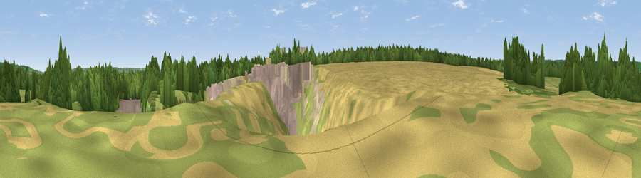

Viewpoint near Offham
#25758 in England · top 26% of its area beats it · near OffhamWhere it is
The exact computed spot (TQ 66025 56275). Click the marker for map links.
The view, rendered

A 360° render of this exact spot computed from the terrain model, tree cover and land cover — summer colours, afternoon light, calibrated against photographs of famous viewpoints. Real trees, hedges and buildings will differ in detail.
The panorama
Grey silhouette: terrain skyline in each direction (720 bearings, Earth curvature and refraction included). Dashed green: skyline with trees (+15 m) and buildings (+8 m) as obstacles. Blue strip: how far the ground is visible on each bearing.
Where the view opens
Wedge length = distance to the farthest visible ground on that bearing (vegetation-aware). Rings at 10, 25 and 50 km.
What fills the view
38% woodland · 22% cropland · 21% grassland · 15% built-up · 4% bare ground
Angular shares of the visible panorama (visual magnitude), not map area. Landscape diversity 0.63 (0–1 Shannon).
Key numbers
More beautiful places nearby
The staircase of upgrades: each row has a higher view potential than everything closer. Driving times are estimates from straight-line distance, calibrated against real road routing — check an actual route before setting out.
| Place | Direction | Drive | Score |
|---|---|---|---|
| Viewpoint near West Peckham | SSW · 3 km | ~8 min | 50.6 |
| Viewpoint near Nettlestead | SSE · 4 km | ~10 min | 54.1 |
| Birchetts Hill | S · 4 km | ~10 min | 56.3 |
| Viewpoint near Vigo Village | NNW · 5 km | ~12 min | 64.6 |
| Viewpoint near Vigo Village | N · 5 km | ~12 min | 65.0 |
| Viewpoint near Wrotham | NW · 6 km | ~12 min | 66.6 |
| Viewpoint near Shipbourne | WSW · 10 km | ~19 min | 69.1 |
| Viewpoint near Westwell | ESE · 33 km | ~51 min | 72.2 |
51.28142, 0.37918 · source: screening · position refined by local search. Computed location — check access rights before visiting.